library(tidyverse)
library(seriation)
library(phyloseq)
library(microViz)
library(shiny)Evomics Workshop part 2
Microbiome analysis with microViz
Welcome to Part 2 👋
- Bar charts and diversity were relatively straightforward topics, conceptually.
- Let’s look at some more things we can do with microbiome composition data!
Topics for part 2:
- Dissimilarity measures
- Ordination: PCoA & PCA (with interactive data exploration)
- Differential abundance testing
Further resources
Refer to the microViz website to see help pages for every function (as well as further tutorials).
Setup ⚙️
Load the R packages we will be using:
Dissimilarity 💩 ↔︎ 💩 ?
- Ecosystem Diversity is sometimes referred to as “alpha” diversity or “within-sample” diversity
- Now we’re going to look at Dissimilarity between ecosystems
- Sometimes this is confusingly referred to as “beta diversity” analysis, or “between-sample” diversity
data("shao19") # this example data is built in to microViz- For this part we’re going to use an infant gut microbiome shotgun metagenomics dataset.
shao19phyloseq-class experiment-level object
otu_table() OTU Table: [ 819 taxa and 1644 samples ]
sample_data() Sample Data: [ 1644 samples by 11 sample variables ]
tax_table() Taxonomy Table: [ 819 taxa by 6 taxonomic ranks ]
phy_tree() Phylogenetic Tree: [ 819 tips and 818 internal nodes ]- Do you remember how to examine a phyloseq object?
- Look at the rank names, sample data variables etc.
#?shao19 # in the console, for info on the data source
A foreword on filtering
- You should check if any of your samples have a surprisingly low total number of (classified) reads.
- This can suggest that something went wrong in the lab (or during sample collection)
- The data from these samples might be unreliable.
- You might already do a check for total reads and remove poor quality samples during the fastq file processing.
shao19 %>%
ps_mutate(reads = sample_sums(shao19)) %>%
samdat_tbl() %>%
ggplot(aes(x = reads)) +
geom_freqpoly(bins = 500) +
geom_rug(alpha = 0.5) +
scale_x_log10(labels = scales::label_number()) +
labs(x = "Number of classified reads", y = NULL) +
theme_bw()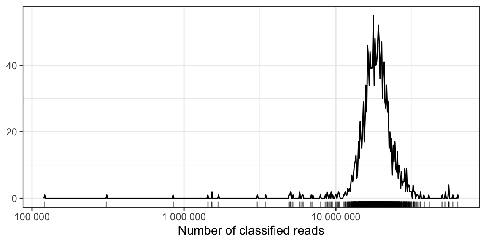
How many is enough? There is no easy answer!
These samples have great depth. There are a few with much less reads than the rest, and a few with under a million. You might consider dropping the samples with under a million reads, to see if it affects your results, but in this case we won’t.
But 100,000 is still a lot, compared to what older sequencing machines produced: 1000 reads might have been considered very good. So look at the distribution for your data, in case there are obvious outliers, and look at recent papers using a similar sequencing technique for what kind of threshold they used.
There might also be relevant information for the type of sequencer you used on e.g. Illumina website. e.g. for this type of sequencing Illumina suggests you should expect at least a million reads (and this is good for RNA seq analyses). https://support.illumina.com/bulletins/2017/04/considerations-for-rna-seq-read-length-and-coverage-.html
Dissimilarity measures
- What are we doing?
- Calculating the dissimilarities between pairs of microbiome samples
- We talked about these commonly-used dissimilarity measures in the lecture.
- Binary Jaccard - presence-absence
- Bray-Curtis - abundance-weighted
- UniFrac distances (unweighted / weighted / generalised)
- To simplify and speed up the analyses, we’re going to take a smaller part of the dataset.
- We’ll only look at the 300 infant fecal samples from 4 days of age.
infants <- shao19 %>% ps_filter(family_role == "child", infant_age == 4)- We’re going to filter out rare taxa quite strictly, for similar reasons
- But we won’t overwrite our smaller dataset: we’ll do the filtering per analysis
- You will find out more about the how and why of taxa filtering later
infants %>%
tax_filter(min_prevalence = 2.5 / 100) %>%
tax_agg(rank = "genus") %>%
tax_transform("binary") %>% # converts counts to absence/presence: 0/1
dist_calc(dist = "jaccard")Proportional min_prevalence given: 0.025 --> min 8/306 samples.psExtra object - a phyloseq object with extra slots:
phyloseq-class experiment-level object
otu_table() OTU Table: [ 35 taxa and 306 samples ]
sample_data() Sample Data: [ 306 samples by 11 sample variables ]
tax_table() Taxonomy Table: [ 35 taxa by 5 taxonomic ranks ]
otu_get(counts = TRUE) [ 35 taxa and 306 samples ]
psExtra info:
tax_agg = "genus" tax_trans = "binary"
jaccard distance matrix of size 306
0.6666667 0.7333333 0.9375 0.8125 0.6428571 ...
“Binary” Jaccard
010101
- Remember to run a “binary” transform on your data before computing “jaccard” distance.
- There is a quantitative form of the Jaccard distance, which is the default behaviour!
- But the qualitative (presence/absence) version is mostly used in microbial ecology.
- If you want an abundance-weighted ecological dissimilarity, use Bray-Curtis!
- We now have our pairwise dissimilarities! 🎉
- A distance matrix is attached as an extra part on the original phyloseq object
Dissimilarity or distance?
- These terms are often used interchangeably
- You will find dissimilarities in a distance matrix
- But if you want to be pedantic a true “distance metric” d, must satisfy 3 properties:
- Identity of indiscernibles: For any samples x and y, d(x, y) = 0 if and only if x = y
- Symmetry: For any samples x and y, d(x, y) = d(y, x)
- Triangle inequality: For any samples x, y, and z, d(x, z) ≤ d(x, y) + d(y, z).
- can be interpreted as: “the direct path between two points must be at least as short as any detour”
- This is not true for e.g. Bray-Curtis, but in practice it is very rarely problematic.
- The object is now class “psExtra” (created by microViz)
- A psExtra also stores info about the aggregation and transformations you performed
distances <- infants %>%
tax_filter(min_prevalence = 2.5 / 100, verbose = FALSE) %>%
tax_agg(rank = "genus") %>%
tax_transform("binary") %>%
dist_calc(dist = "jaccard") %>%
dist_get()You can extract the distance matrix with dist_get.
as.matrix(distances)[1:5, 1:5] B01089_ba_4 B01190_ba_4 B01194_ba_4 B01196_ba_4 B01235_ba_4
B01089_ba_4 0.0000000 0.6666667 0.7333333 0.9375000 0.8125000
B01190_ba_4 0.6666667 0.0000000 0.7500000 0.9166667 0.8461538
B01194_ba_4 0.7333333 0.7500000 0.0000000 0.4615385 0.3076923
B01196_ba_4 0.9375000 0.9166667 0.4615385 0.0000000 0.4615385
B01235_ba_4 0.8125000 0.8461538 0.3076923 0.4615385 0.0000000The Binary Jaccard dissimilarities range between 0 (identical) and 1 (no shared genera).
range(distances)[1] 0 1Ordination
- What can we do with these dissimilarities? 🤔
- We can make an ordination! 💡
- Conceptually, ordination refers to a process of ordering things (in our case: samples).
- Similar samples are placed closer to each other, and dissimilar samples are placed further away.
PCoA
Principal Co-ordinates Analysis is one kind of ordination.
- PCoA takes a distance matrix and finds new dimensions (a co-ordinate system, if you like)
- The new dimensions are created with the aim to preserve the original distances between samples
- And to capture the majority of this distance information in the first dimensions
- This makes it easier to visualize the patterns in your data, in 2D or 3D plots 👀
For more info, see “GUSTAME”
- There is helpful info about ordination methods including PCoA on the GUide to STatistical Analysis in Microbial Ecology website (GUSTA ME). https://sites.google.com/site/mb3gustame/dissimilarity-based-methods/principal-coordinates-analysis
- This website covers a lot of other topics too, which may be interesting for you to read at a later date if you’ll work on microbiome analysis.
infants %>%
tax_filter(min_prevalence = 2.5 / 100, verbose = FALSE) %>%
tax_transform(trans = "identity", rank = "genus") %>%
dist_calc(dist = "bray") %>%
ord_calc(method = "PCoA") %>%
ord_plot(alpha = 0.6, size = 2) +
theme_classic(12) +
coord_fixed(0.7)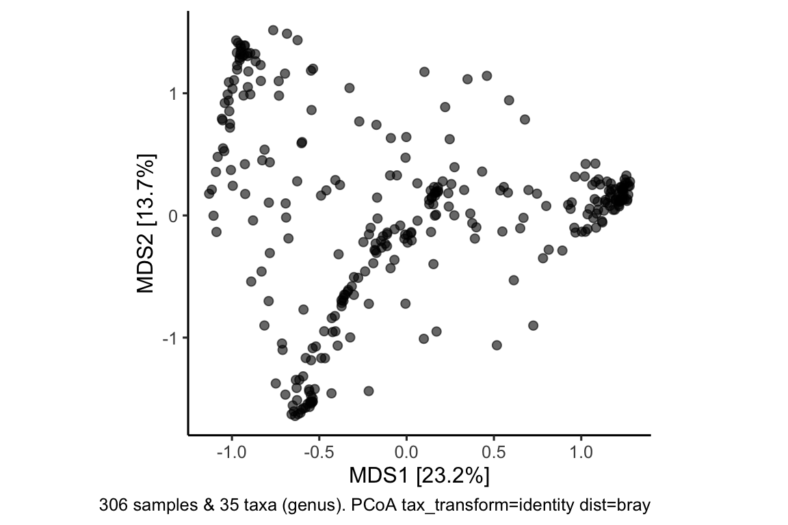
To get a little insight into what has happened here, we can colour each sample according to its dominant (most abundant) genus.
infants %>%
tax_filter(min_prevalence = 2.5 / 100, verbose = FALSE) %>%
ps_calc_dominant(rank = "genus", none = "Mixed", other = "Other") %>%
tax_transform(trans = "identity", rank = "genus") %>%
dist_calc(dist = "bray") %>%
ord_calc(method = "PCoA") %>%
ord_plot(color = "dominant_genus", alpha = 0.6, size = 2) +
scale_color_brewer(name = "Dominant Genus", palette = "Dark2") +
theme_classic(12) +
coord_fixed(0.7)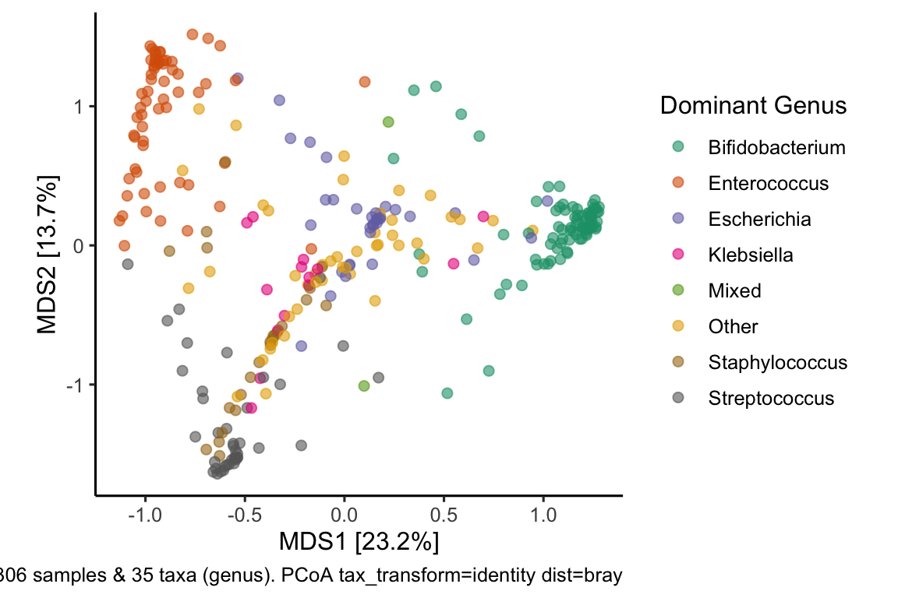
Interactive ordination!
microViz provides a Shiny app ord_explore to interactively create and explore PCoA plots and other ordinations. See the code below to get started. But read the instructions first.
Instructions: a few things to try out
- Colour the samples using the variables in the sample data
- Select a few samples to view their composition on barplots!
- Change some ordination options:
- Different rank of taxonomic aggregation
- Different distances we’ve discussed
- Copy the automatically generated code
- Exit the app (press escape or click red button in R console!)
- Paste and run the code to recreate the ordination plot
- Customise the plot: change colour scheme, title, etc.
- Launch the app again with a different subset of the data
- Practice using
ps_filteretc. - e.g. plot the data of the mothers’ gut microbiomes!
- compute and colour points by an alpha diversity measure?
- Practice using
Beware: some important notes on interactive analysis
- UniFrac distances can be quite slow (over a minute) to calculate!
- Filter to fewer samples and fewer taxa to speed it up (Before launching the app)
- There are many distances available, feel free to try out ones we haven’t talked about
- BUT:
- You shouldn’t use a distance that you don’t understand in your actual work, even if the plot looks nice! 😉
- A few of the distances might not work…
- They are mostly implemented in the package
veganand I haven’t tested them all - Errors will appear in the RStudio R console
- You can report to me any distances that don’t work (if you’re feeling helpful! 😇)
- They are mostly implemented in the package
- BUT:
- There are other ordination methods available in
ord_explore- Try out PCA, principal components analysis, which does NOT use distances
- We will not cover constrained and conditioned ordinations
- If you are interested in e.g. RDA, you can look this up later
- See the Guide to Statistical Analysis in Microbial Ecology
# fire up the shiny app
# run these lines in your console (don't keep in script/notebook)
infants %>%
tax_filter(min_prevalence = 2.5 / 100, verbose = FALSE) %>%
# calculate new sample variables with dominant taxon (optional)
ps_calc_dominant(rank = "genus", none = "Mixed", other = "Other") %>%
# launch a Shiny app in your web browser!
ord_explore()# Again, with different options
# Run these lines in your console
shao19 %>%
ps_filter(family_role == "mother") %>%
tax_filter(min_prevalence = 2.5 / 100, verbose = FALSE) %>%
# calculate a few sample variables for interest (optional)
ps_calc_dominant(rank = "genus", none = "Mixed", other = "Other") %>%
ps_calc_diversity(rank = "genus", index = "shannon") %>%
ps_calc_richness(rank = "genus", index = "observed") %>%
# launch a Shiny app in your web browser!
ord_explore()PERMANOVA
Permutational multivariate analysis of variance.
- ANOVA - analysis of variance (statistical modelling approach)
- Multivariate - more than one dependent variable (multiple taxa!)
- Permutational - statistical significance estimates obtained by shuffling the data many times
For more details on PERMANOVA
- See this excellent book chapter by Marti Anderson on PERMANOVA: https://onlinelibrary.wiley.com/doi/full/10.1002/9781118445112.stat07841
- Sometimes PERMANOVA is called NP-MANOVA (non-parametric MANOVA)
- e.g. on the GUide to STatistical Analysis in Microbial Ecology website.
- TLDR: Are those groups on the PCoA actually different??
infants %>%
tax_filter(min_prevalence = 2.5 / 100, verbose = FALSE) %>%
tax_agg(rank = "genus") %>%
dist_calc(dist = "bray") %>%
ord_calc(method = "PCoA") %>%
ord_plot(alpha = 0.6, size = 2, color = "birth_mode") +
theme_classic(12) +
coord_fixed(0.7) +
stat_ellipse(aes(color = birth_mode)) +
scale_color_brewer(palette = "Set1")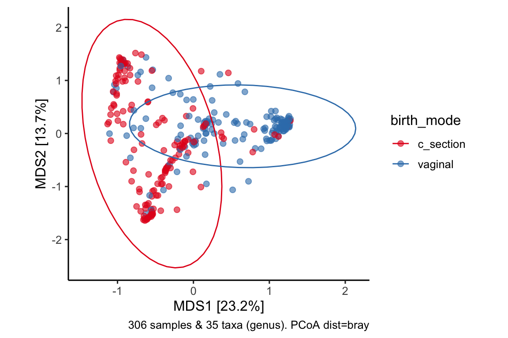
infants %>%
tax_filter(min_prevalence = 2.5 / 100, verbose = FALSE) %>%
tax_agg(rank = "genus") %>%
dist_calc(dist = "bray") %>%
dist_permanova(variables = "birth_mode", n_perms = 99, seed = 123) %>%
perm_get()2023-05-23 20:39:12.303636 - Starting PERMANOVA with 99 perms with 1 processes2023-05-23 20:39:12.396654 - Finished PERMANOVAPermutation test for adonis under reduced model
Marginal effects of terms
Permutation: free
Number of permutations: 99
vegan::adonis2(formula = formula, data = metadata, permutations = n_perms, by = by, parallel = parall)
Df SumOfSqs R2 F Pr(>F)
birth_mode 1 13.790 0.12366 42.898 0.01 **
Residual 304 97.727 0.87634
Total 305 111.518 1.00000
---
Signif. codes: 0 '***' 0.001 '**' 0.01 '*' 0.05 '.' 0.1 ' ' 1# Use more permutations for a more reliable p.value in your real work (slower)
# Set a random seed number for reproducibility of this stochastic methodYou can see from the model output that the p value, Pr(>F) is below 0.05. So there is good statistical evidence that the bacterial gut microbiota composition of C-section delivered infants has a different composition than vaginally delivered infants at 4 days of age.
Reporting PCoA and PERMANOVA methods
- Your methodological choices matter, you should report what you did:
- any relevant rare taxon filtering thresholds
- the taxonomic rank of aggregation
- the dissimilarity measure used to compute the pairwise distances
It’s probably a good idea to decide on a couple of appropriate distance measures up front for these tests, and report both (at least in supplementary material), as the choice of distance measure can affect results and conclusions!
Covariate-adjusted PERMANOVA
You can also adjust for covariates in PERMANOVA, and often should, depending on your study design. Let’s fit a more complex model, adjusting for infant sex, birth weight, and the total number of assigned reads.
infants %>%
tax_filter(min_prevalence = 2.5 / 100, verbose = FALSE) %>%
tax_agg(rank = "genus") %>%
dist_calc(dist = "bray") %>%
dist_permanova(
variables = c("birth_mode", "sex", "birth_weight", "number_reads"),
n_perms = 99, seed = 111
) %>%
perm_get()Dropping samples with missings: 152023-05-23 20:39:12.478693 - Starting PERMANOVA with 99 perms with 1 processes2023-05-23 20:39:13.167696 - Finished PERMANOVAPermutation test for adonis under reduced model
Marginal effects of terms
Permutation: free
Number of permutations: 99
vegan::adonis2(formula = formula, data = metadata, permutations = n_perms, by = by, parallel = parall)
Df SumOfSqs R2 F Pr(>F)
birth_mode 1 10.794 0.10163 34.8045 0.01 **
sex 1 0.280 0.00264 0.9031 0.43
birth_weight 1 0.565 0.00532 1.8215 0.06 .
number_reads 1 2.873 0.02705 9.2656 0.01 **
Residual 286 88.696 0.83509
Total 290 106.211 1.00000
---
Signif. codes: 0 '***' 0.001 '**' 0.01 '*' 0.05 '.' 0.1 ' ' 1# Use more permutations for a more reliable p.value in your real work (slower)
# Set a random seed number for reproducibility of this stochastic methodPCA
- Principal Components Analysis.
- For practical purposes, PCA is quite similar to Principal Co-ordinates Analysis.
- In fact, PCA produces equivalent results to PCoA with Euclidean distances.
“Help, what are Euclidean distances?”
- Euclidean distances are essentially a generalization of Pythagoras’ theorem to more dimensions.
- In our data every taxon is a feature, a dimension, on which we calculate Euclidean distances.
Pythagoras’ theorem:
\[c = \sqrt{a^2 + b^2}\]
Euclidean distance:
\[d\left(p, q\right) = \sqrt{\sum _{i=1}^{n_{taxa}} \left( p_{i}-q_{i}\right)^2 }\]
- Distance \(d\) between samples \(p\) and \(q\), with \(i\) taxa.
Code
infants %>%
tax_agg(rank = "genus") %>%
dist_calc(dist = "euclidean") %>%
ord_calc(method = "PCoA") %>%
ord_plot(alpha = 0.6, size = 2) +
geom_rug(alpha = 0.1)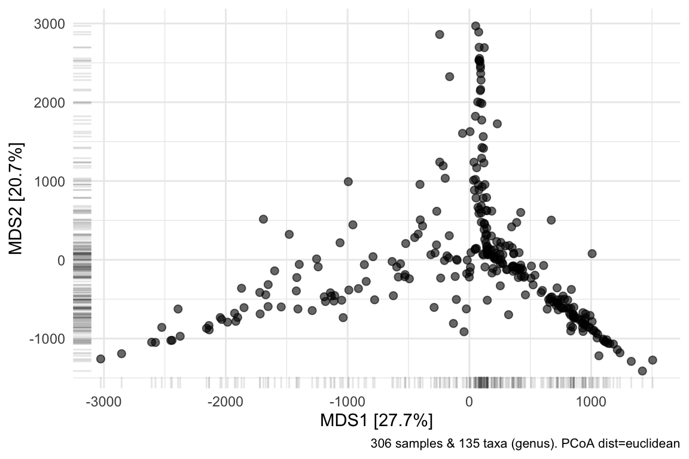
Code
infants %>%
tax_agg(rank = "genus") %>%
ord_calc(method = "PCA") %>%
ord_plot(alpha = 0.6, size = 2) +
geom_rug(alpha = 0.1)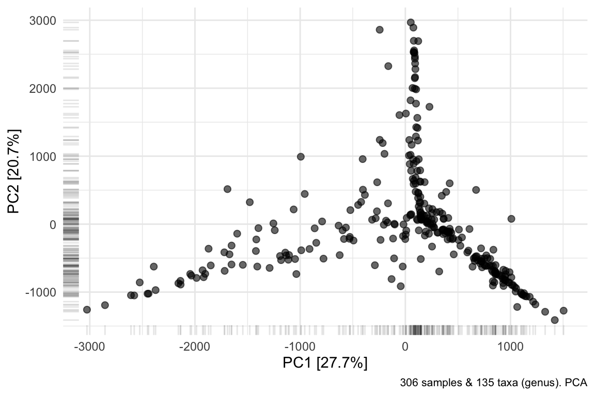
Problems with PCA (or PCoA with Euclidean Distances) on microbiome data
- These plots look weird! most samples bunch in the middle, with spindly projections..
- Sensitive to sparsity (double-zero problem) –> filter rare taxa
- Excessive emphasis on high-abundance taxa –> log transform features first
Log transformations, and CLR
- First let’s look at the abundance again, this time with heatmaps.
- Each column is a sample (from an infant), and each row is a taxon.
infants %>%
tax_sort(by = sum, at = "genus", trans = "compositional", tree_warn = FALSE) %>%
tax_transform(trans = "compositional", rank = "genus") %>%
comp_heatmap(samples = 1:20, taxa = 1:20, name = "Proportions", tax_seriation = "Identity")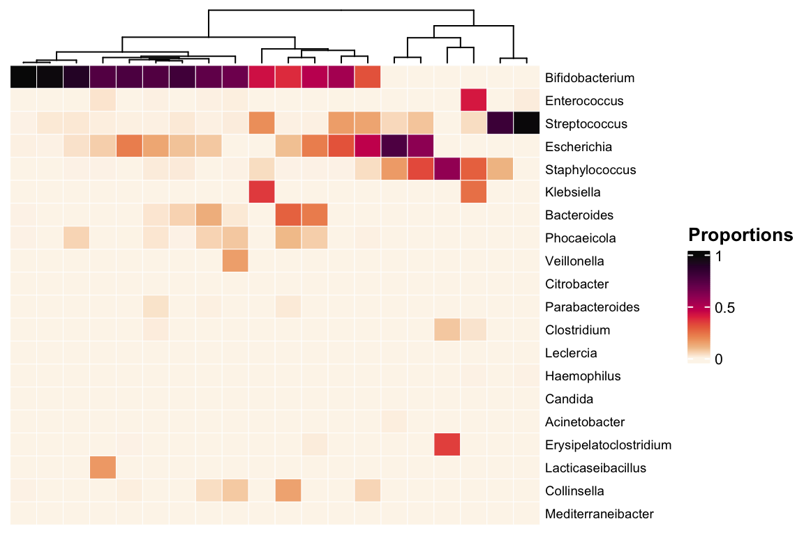
- Even though we have picked the top 20 most abundant genera, there are still a lot of zeros
- Problem: We need to deal with the zeros, because
log(0)is undefined. - Solution: add a small amount to every value (or just every zero), before applying the log transformation.
- This small value is often called a pseudo-count.
What value should we use for the pseudo-count?
- One easy option is to just add a count of 1
- Another popular option is to add half of the smallest observed real value (from across the whole dataset)
- In general, for zero replacement, keep it simple and record your approach
Centered Log Ratio transformation:
Remember, Microbiome Datasets Are Compositional: And This Is Not Optional.
More details on the “CoDa” problem:
- The sequencing data gives us relative abundances, not absolute abundances.
- The total number of reads sequenced per sample is an arbitrary total.
This leads to two main types of problem:
- Interpretation caveats: see differential abundance section later
- Statistical issues: taxon abundances are not independent, and may appear negatively correlated
- These issues are worse with simpler ecosystems
Example: If one taxon blooms, the relative abundance of all other taxa will appear to decrease, even if they did not.
There is the same problem in theory with RNAseq data, but I suspect it is less bothersome because there are many more competing “species” of RNA transcript than there are bacterial species in even a very complex microbiome. The centered-log-ratio transformation (along with some other similar ratio transformations) are claimed to help with the statistical issues by transforming the abundances from the simplex to the real space.
TL;DR - the CLR transformation is useful for compositional microbiome data.
- Practically, the CLR transformation involves finding the geometric mean of each sample
- Then dividing abundance of each taxon in that sample by this geometric mean
- Finally, you take the natural log of these ratios
infants %>%
tax_sort(by = sum, at = "genus", trans = "compositional", tree_warn = FALSE) %>%
tax_agg(rank = "genus") %>%
tax_transform(trans = "clr", zero_replace = "halfmin", chain = TRUE) %>%
comp_heatmap(
samples = 1:20, taxa = 1:20, grid_lwd = 2, name = "CLR",
colors = heat_palette(sym = TRUE),
tax_seriation = "Identity"
)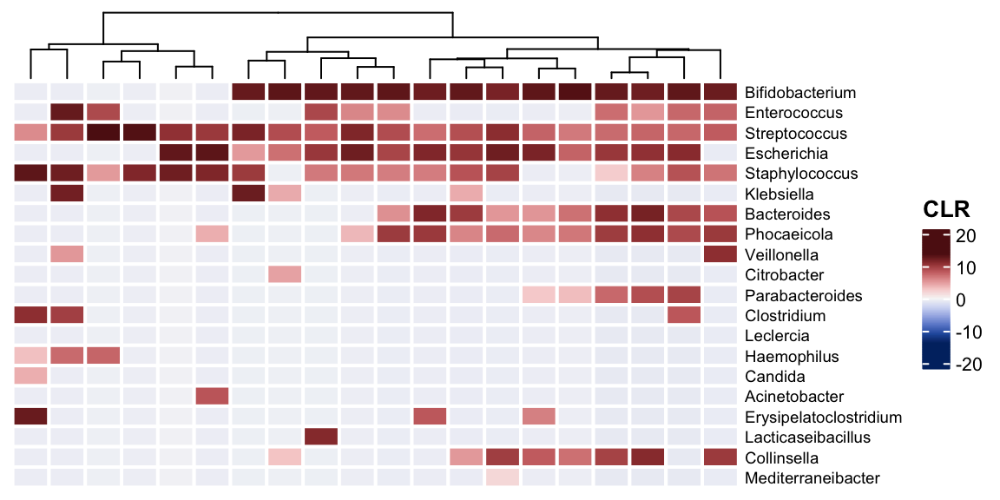
PCA on CLR-transformed taxa
infants %>%
tax_filter(min_prevalence = 2.5 / 100, verbose = FALSE) %>%
tax_transform(rank = "genus", trans = "clr", zero_replace = "halfmin") %>%
ord_calc(method = "PCA") %>%
ord_plot(alpha = 0.6, size = 2, color = "birth_mode") +
theme_classic(12) +
coord_fixed(0.7)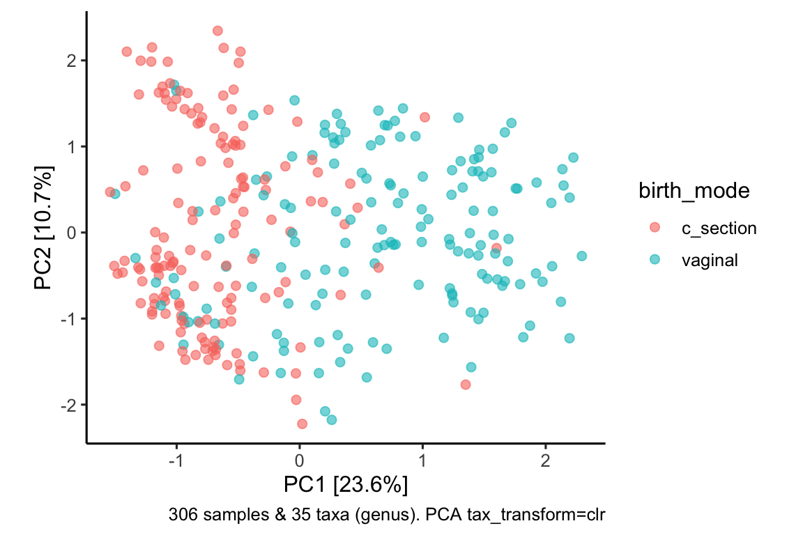
- After the CLR transformation, the plot looks better
- We can see a pattern where the gut microbiomes of infants cluster by birth mode
So why is PCA interesting for us?
Principal components are built directly from a (linear) combination of the original features.
That means we know how much each taxon contributes to each PC dimension
We can plot this information (loadings) as arrows, alongside the sample points
pca <- infants %>%
tax_filter(min_prevalence = 2.5 / 100, verbose = FALSE) %>%
tax_transform(rank = "genus", trans = "clr", zero_replace = "halfmin") %>%
ord_calc(method = "PCA") %>%
ord_plot(
alpha = 0.6, size = 2, color = "birth_mode",
plot_taxa = 1:6, tax_vec_length = 0.275,
tax_lab_style = tax_lab_style(
type = "text", max_angle = 90, aspect_ratio = 0.7,
size = 3, fontface = "bold"
),
) +
theme_classic(12) +
coord_fixed(0.7, clip = "off")
pca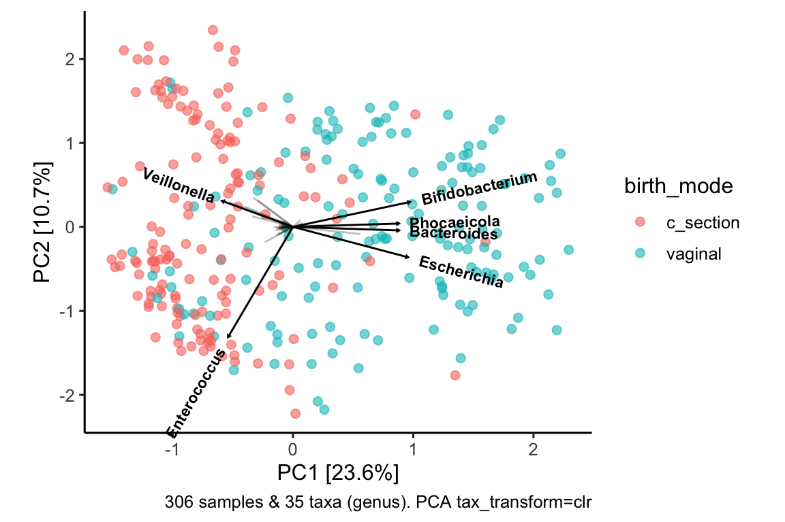
Interestingly, samples on the right of the plot (which tend to be vaginally-delivered infants) seem to have relatively more Bifidobacterium, Bacteroides and Escherichia, whilst the C-section born infants have relatively more Veillonella.
Wait, how to interpret these taxa loadings?
Cautiously
- There are caveats and nuance to the interpretation of these plots, which are called PCA bi-plots
- You can read more here: https://sites.google.com/site/mb3gustame/indirect-gradient-analysis/pca
In general:
The relative length and direction of an arrow indicates how much that taxon contributes to the variation on each visible PC axis, e.g. Variation in Enterococcus abundance contributes quite a lot to variation along the PC2 axis.
This allows you to infer that samples positioned at the bottom of the plot will tend to have higher relative abundance of Enterococcus than samples at the top of the plot.
(Side note, Phocaeicola were considered part of Bacteroides until this year!)
Fancy circular bar charts?
We can make another kind of barplot, using the PCA information to order our samples in a circular layout.
iris <- infants %>%
tax_filter(min_prevalence = 2.5 / 100, verbose = FALSE) %>%
tax_transform(rank = "genus", trans = "clr", zero_replace = "halfmin") %>%
ord_calc(method = "PCA") %>%
ord_plot_iris(
tax_level = "genus", n_taxa = 12, other = "Other",
anno_colour = "birth_mode",
anno_colour_style = list(alpha = 0.6, size = 0.6, show.legend = FALSE)
)patchwork::wrap_plots(pca, iris, nrow = 1, guides = "collect")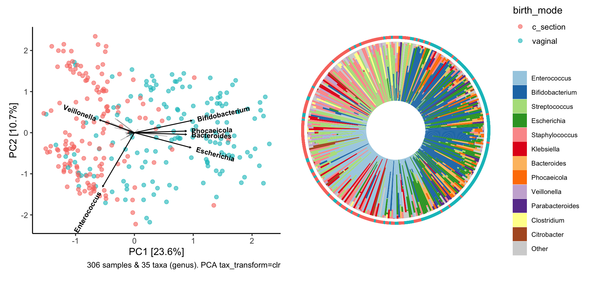
Taxon filtering
We probably want to filter out rare taxa, before performing some kinds of analysis.
Why remove rare taxa?
Rare taxa might sometimes be:
- Sequencing errors
- Statistically problematic
- Biologically irrelevant
How to remove rare taxa?
What is rare? Two main concepts.
- Low prevalence - taxon only detected in a small number of samples in your dataset.
- Low abundance - relatively few reads assigned to that taxon (on average or in total)
Considering the impact of issues 1, 2, and 3, let’s say we are not interested in Species that occur in fewer than 2% of samples, and they have to have at least 10,000 reads in total across all samples.
ntaxa(shao19) # before filtering[1] 819shao19 %>%
tax_filter(min_prevalence = 2 / 100, min_total_abundance = 10000) %>%
ntaxa() # after filteringProportional min_prevalence given: 0.02 --> min 33/1644 samples.[1] 253- Wow so that would remove most of our unique taxa!
- What is going on? Let’s make some plots!
# make table of summary statistics for the unique taxa in shao19
shaoTaxaStats <- tibble(
taxon = taxa_names(shao19),
prevalence = microbiome::prevalence(shao19),
total_abundance = taxa_sums(shao19)
)Some ggplot2 code
p <- shaoTaxaStats %>%
ggplot(aes(total_abundance, prevalence)) +
geom_point(alpha = 0.5) +
geom_rug(alpha = 0.1) +
scale_x_continuous(labels = scales::label_number(), name = "Total Abundance") +
scale_y_continuous(
labels = scales::label_percent(), breaks = scales::breaks_pretty(n = 9),
name = "Prevalence (%)",
sec.axis = sec_axis(
trans = ~ . * nsamples(shao19), breaks = scales::breaks_pretty(n = 9),
name = "Prevalence (N samples)"
)
) +
theme_bw()
p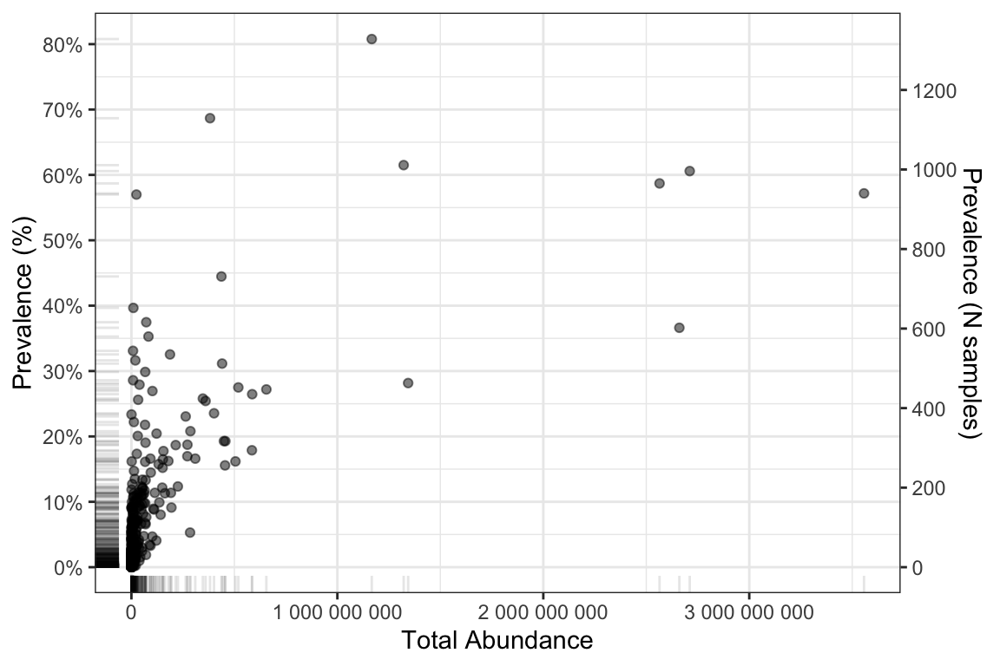
So most taxa have a low prevalence, and handful have way more reads than most.
Let’s label those points to check which taxa are the big time players.
p + ggrepel::geom_text_repel(
data = function(df) filter(df, total_abundance > 1e9 | prevalence > 0.6),
mapping = aes(label = taxon), size = 2.5, min.segment.length = 0, force = 15
)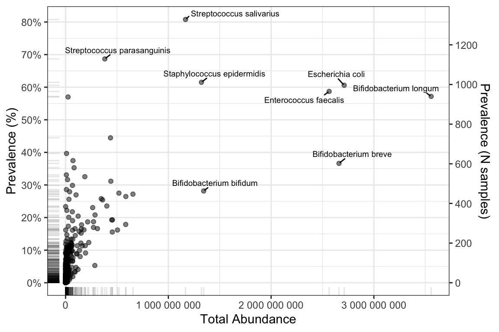
Those taxa make sense for this dataset of mostly infant gut microbiome samples.
Now let’s zoom in on the less abundant taxa by log-transforming the axes. We’ll also add lines indicating the thresholds of 2% prevalence and 10000 reads abundance.
Some more ggplot2 code
shaoTaxaStats %>%
ggplot(aes(x = total_abundance, y = prevalence)) +
geom_vline(xintercept = 10000, color = "red", linetype = "dotted") +
geom_hline(yintercept = 2 / 100, color = "red", linetype = "dotted") +
geom_point(alpha = 0.5) +
geom_rug(alpha = 0.1) +
scale_x_log10(labels = scales::label_number(), name = "Total Abundance") +
scale_y_log10(
labels = scales::label_percent(), breaks = scales::breaks_log(n = 9),
name = "Prevalence (%)",
sec.axis = sec_axis(
trans = ~ . * nsamples(shao19), breaks = scales::breaks_log(n = 9),
name = "Prevalence (N samples)"
)
) +
theme_bw()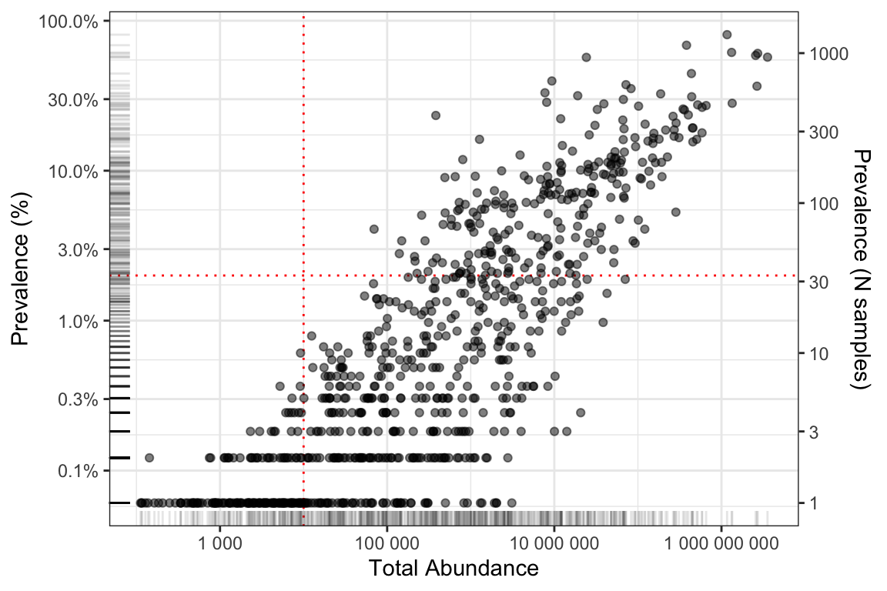
- We can break this down by phylum if we add the taxonomic table information.
A lot more ggplot2 code!
# don't worry about this code if it's confusing, just focus on the plot output
shao19 %>%
tax_table() %>%
as.data.frame() %>%
as_tibble(rownames = "taxon") %>%
left_join(shaoTaxaStats, by = "taxon") %>%
add_count(phylum, name = "phylum_count", sort = TRUE) %>%
mutate(phylum = factor(phylum, levels = unique(phylum))) %>% # to fix facet order
mutate(phylum = forcats::fct_lump_n(phylum, n = 5)) %>%
mutate(phylum = forcats::fct_explicit_na(phylum, na_level = "Other")) %>%
ggplot(aes(total_abundance, prevalence)) +
geom_vline(xintercept = 10000, color = "red", linetype = "dotted") +
geom_hline(yintercept = 2 / 100, color = "red", linetype = "dotted") +
geom_point(alpha = 0.5, size = 1) +
geom_rug(alpha = 0.2) +
scale_x_log10(
labels = scales::label_log(), breaks = scales::breaks_log(n = 5),
name = "Total Abundance"
) +
scale_y_log10(
labels = scales::label_percent(), breaks = scales::breaks_log(n = 9),
name = "Prevalence (%)",
sec.axis = sec_axis(
trans = ~ . * nsamples(shao19), breaks = scales::breaks_log(n = 9),
name = "Prevalence (N samples)"
)
) +
facet_wrap("phylum") +
theme_bw(10)Warning: There was 1 warning in `mutate()`.
ℹ In argument: `phylum = forcats::fct_explicit_na(phylum, na_level = "Other")`.
Caused by warning:
! `fct_explicit_na()` was deprecated in forcats 1.0.0.
ℹ Please use `fct_na_value_to_level()` instead.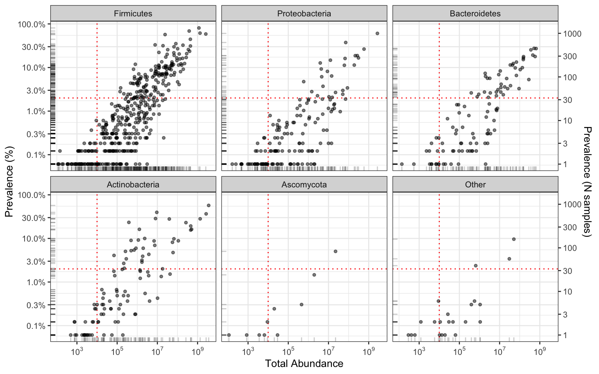
How you pick a threshold, depends on what analysis method you are filtering for!
- alpha diversity: do not filter
- beta diversity: relevance of threshold depends on your distance measure
- differential abundance testing: stringent filtering, prevalence >5%, >10%?
Taxon stats
From the PCA loadings and barplots above, we have some strong suspicions about which taxa have a higher relative abundance in vaginally delivered infants than in c-section delivered infants, and vice versa, but we can also statistically test this. This is often called “differential abundance” (DA) testing, in the style of “differential expression” (DE) testing from the transcriptomics field.
infants %>%
comp_barplot(
tax_level = "genus", n_taxa = 12, facet_by = "birth_mode",
label = NULL, bar_outline_colour = NA
) +
coord_flip() +
theme(axis.ticks.y = element_blank())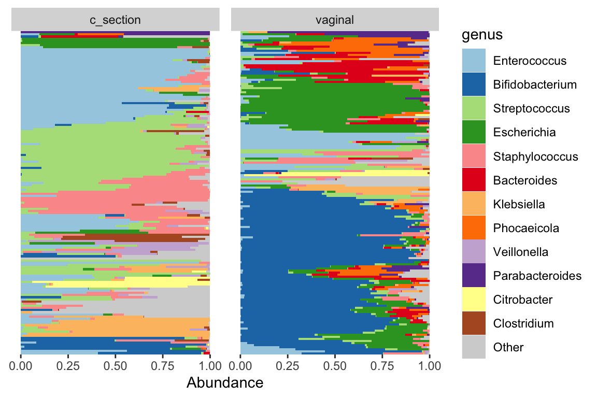
Model one taxon
- We will start by creating a linear regression model for one genus, Bacteroides.
- We will transform the count data by first making it proportions, and then taking a base 2 logarithm, log2, after adding a pseudocount.
bacteroidesRegression1 <- infants %>%
tax_transform("compositional", rank = "genus") %>%
tax_transform("log2", zero_replace = "halfmin", chain = TRUE) %>%
tax_model(
type = "lm", rank = "genus",
taxa = "Bacteroides", variables = "birth_mode",
return_psx = FALSE
) %>%
pluck(1)Modelling: Bacteroides- Looking at the regression results
summary(bacteroidesRegression1)
Call:
Bacteroides ~ birth_mode
Residuals:
Min 1Q Median 3Q Max
-7.7492 -0.6172 -0.6172 2.6421 18.0804
Coefficients:
Estimate Std. Error t value Pr(>|t|)
(Intercept) -19.3756 0.4863 -39.84 <2e-16 ***
birth_modevaginal 7.1320 0.6812 10.47 <2e-16 ***
---
Signif. codes: 0 '***' 0.001 '**' 0.01 '*' 0.05 '.' 0.1 ' ' 1
Residual standard error: 5.957 on 304 degrees of freedom
Multiple R-squared: 0.265, Adjusted R-squared: 0.2626
F-statistic: 109.6 on 1 and 304 DF, p-value: < 2.2e-16broom::tidy(bacteroidesRegression1, conf.int = TRUE)# A tibble: 2 × 7
term estimate std.error statistic p.value conf.low conf.high
<chr> <dbl> <dbl> <dbl> <dbl> <dbl> <dbl>
1 (Intercept) -19.4 0.486 -39.8 1.08e-122 -20.3 -18.4
2 birth_modevaginal 7.13 0.681 10.5 4.13e- 22 5.79 8.47
Click here for optional ggplot2 extension exercise:
Starting from a dataframe like the one produced by the code below, plot:
- Easy: The percentage prevalence of Bacteroides in each birth_mode group
- Medium: The distribution of relative abundance of Bacteroides in each birth_mode group, omitting zeros, on a log2 scale
- Hard: Do task 1 or 2 for for several taxa in one plot - (hint:
pivot_longer)
infants %>%
tax_transform("compositional", rank = "genus") %>%
ps_get() %>%
ps_otu2samdat(taxa = "Bacteroides") %>%
samdat_tbl()We can fit a model with covariates, as we did for PERMANOVA
- We will convert the categorical variables into indicator (dummy) variables
- We will scale the continuous covariates to 0 mean and SD 1 (z-scores)
- You’ll see this will make our subsequent plots easier to interpret later
infants <- infants %>%
ps_mutate(
C_section = if_else(birth_mode == "c_section", true = 1, false = 0),
Female = if_else(sex == "female", true = 1, false = 0),
Birth_weight_Z = scale(birth_weight, center = TRUE, scale = TRUE),
Reads_Z = scale(number_reads, center = TRUE, scale = TRUE)
)bacteroidesRegression2 <- infants %>%
tax_transform("compositional", rank = "genus") %>%
tax_transform("log2", zero_replace = "halfmin", chain = TRUE) %>%
tax_model(
type = "lm", rank = "genus", taxa = "Bacteroides",
variables = c("C_section", "Female", "Birth_weight_Z", "Reads_Z"),
return_psx = FALSE
) %>%
pluck(1)Warning in do.call(fun, list(txt)): 15 / 306 values are NA in FemaleWarning in do.call(fun, list(txt)): 14 / 306 values are NA in Birth_weight_ZModelling: Bacteroides- Looking at the regression results
summary(bacteroidesRegression2)
Call:
Bacteroides ~ C_section + Female + Birth_weight_Z + Reads_Z
Residuals:
Min 1Q Median 3Q Max
-9.4271 -2.1555 -0.4115 2.8176 18.1784
Coefficients:
Estimate Std. Error t value Pr(>|t|)
(Intercept) -11.7942 0.6103 -19.325 <2e-16 ***
C_section -7.5696 0.7206 -10.505 <2e-16 ***
Female -0.3809 0.7101 -0.536 0.592
Birth_weight_Z 0.3277 0.3514 0.932 0.352
Reads_Z 0.5361 0.3620 1.481 0.140
---
Signif. codes: 0 '***' 0.001 '**' 0.01 '*' 0.05 '.' 0.1 ' ' 1
Residual standard error: 5.934 on 286 degrees of freedom
(15 observations deleted due to missingness)
Multiple R-squared: 0.2854, Adjusted R-squared: 0.2754
F-statistic: 28.55 on 4 and 286 DF, p-value: < 2.2e-16broom::tidy(bacteroidesRegression2, conf.int = TRUE)# A tibble: 5 × 7
term estimate std.error statistic p.value conf.low conf.high
<chr> <dbl> <dbl> <dbl> <dbl> <dbl> <dbl>
1 (Intercept) -11.8 0.610 -19.3 8.15e-54 -13.0 -10.6
2 C_section -7.57 0.721 -10.5 4.81e-22 -8.99 -6.15
3 Female -0.381 0.710 -0.536 5.92e- 1 -1.78 1.02
4 Birth_weight_Z 0.328 0.351 0.932 3.52e- 1 -0.364 1.02
5 Reads_Z 0.536 0.362 1.48 1.40e- 1 -0.176 1.25Many DA methods
- This method simple method is borrowed from MaAsLin2
- Note: they call the compositional transformation “Total Sum Scaling (TSS)”)
- This is quite a straightforward method, so we will stick with this for today
- But, many statistical methods have been developed for differential abundance analyses
Microbiome abundance data are quite awkward, statistically speaking, due to their sparseness and compositionality. Each successive method claims to handle some aspect of this awkwardness “better” than previous methods.
The aim is to have a method with adequate power to detect true associations, whilst controlling the type 1 error rate, the “false positive” reporting of associations that are not “truly” present.
Results are surprisingly inconsistent across the different methods, as demonstrated this year in a fascinating analysis by Jacob Nearing and colleagues.
So, what to do?
- Filter out the noise & interpret results with caution! use multiple testing corrections
- Remember it’s all relative (abundance)
- Try 2 or 3 methods and/or use same method as a previous study if replicating
- Avoid Lefse and edgeR?
- Beware: Not all methods allow covariate adjustment & few allow random effects (for time-series)
Model all the taxa!
- We’re not normally interested in just one taxon!
- It’s also hard to decide which taxonomic rank we are most interested in modelling!
- Lower ranks like species or ASVs give better resolution but also more sparsity and classification uncertainty…
- Higher ranks e.g. classes, could also be more powerful if you think most taxa within that class will follow a similar pattern.
- So now we will fit a similar model for almost every taxon* at every rank from phylum to species
- *We’ll filter out species with a prevalence of less than 10%
# The code for `taxatree_models` is quite similar to tax_model.
# However, you might need to run `tax_prepend_ranks` to ensure that each taxon at each rank is always unique.
shaoModels <- infants %>%
tax_prepend_ranks() %>%
tax_transform("compositional", rank = "species", keep_counts = TRUE) %>%
tax_filter(min_prevalence = 0.1, undetected = 0, use_counts = TRUE) %>%
tax_transform(trans = "log2", chain = TRUE, zero_replace = "halfmin") %>%
taxatree_models(
type = lm,
ranks = c("phylum", "class", "order", "family", "genus", "species"),
variables = c("C_section", "Female", "Birth_weight_Z", "Reads_Z")
)Proportional min_prevalence given: 0.1 --> min 31/306 samples.2023-05-23 20:39:23.285753 - modelling at rank: phylumWarning in do.call(fun, list(txt)): 15 / 306 values are NA in FemaleWarning in do.call(fun, list(txt)): 14 / 306 values are NA in Birth_weight_Z2023-05-23 20:39:23.34296 - modelling at rank: classWarning in do.call(fun, list(txt)): 15 / 306 values are NA in Female
Warning in do.call(fun, list(txt)): 14 / 306 values are NA in Birth_weight_Z2023-05-23 20:39:23.428134 - modelling at rank: orderWarning in do.call(fun, list(txt)): 15 / 306 values are NA in Female
Warning in do.call(fun, list(txt)): 14 / 306 values are NA in Birth_weight_Z2023-05-23 20:39:23.526922 - modelling at rank: familyWarning in do.call(fun, list(txt)): 15 / 306 values are NA in Female
Warning in do.call(fun, list(txt)): 14 / 306 values are NA in Birth_weight_Z2023-05-23 20:39:23.655146 - modelling at rank: genusWarning in do.call(fun, list(txt)): 15 / 306 values are NA in Female
Warning in do.call(fun, list(txt)): 14 / 306 values are NA in Birth_weight_Z2023-05-23 20:39:23.796617 - modelling at rank: speciesWarning in do.call(fun, list(txt)): 15 / 306 values are NA in Female
Warning in do.call(fun, list(txt)): 14 / 306 values are NA in Birth_weight_ZshaoModelspsExtra object - a phyloseq object with extra slots:
phyloseq-class experiment-level object
otu_table() OTU Table: [ 39 taxa and 306 samples ]
sample_data() Sample Data: [ 306 samples by 15 sample variables ]
tax_table() Taxonomy Table: [ 39 taxa by 6 taxonomic ranks ]
otu_get(counts = TRUE) [ 39 taxa and 306 samples ]
psExtra info:
tax_agg = "species" tax_trans = "compositional&log2"
taxatree_models list:
Ranks: phylum/class/order/family/genus/speciesWhy filter the taxa? It’s less likely that we are interested in rare taxa, and models of rare taxon abundances are more likely to be unreliable. Reducing the the number of taxa modelled also makes the process faster and makes visualizing the results easier!
Getting stats from the models
Next we will get a data.frame containing the regression coefficient estimates, test statistics and corresponding p values from all these regression models.
shaoStats <- taxatree_models2stats(shaoModels)
shaoStatspsExtra object - a phyloseq object with extra slots:
phyloseq-class experiment-level object
otu_table() OTU Table: [ 39 taxa and 306 samples ]
sample_data() Sample Data: [ 306 samples by 15 sample variables ]
tax_table() Taxonomy Table: [ 39 taxa by 6 taxonomic ranks ]
otu_get(counts = TRUE) [ 39 taxa and 306 samples ]
psExtra info:
tax_agg = "species" tax_trans = "compositional&log2"
taxatree_stats dataframe:
89 taxa at 6 ranks: phylum, class, order, family, genus, species
4 terms: C_section, Female, Birth_weight_Z, Reads_ZshaoStats %>% taxatree_stats_get()# A tibble: 356 × 8
term taxon rank formula estimate std.error statistic p.value
<fct> <chr> <fct> <chr> <dbl> <dbl> <dbl> <dbl>
1 C_section p: Proteo… phyl… `p: Pr… -3.44 1.31 -2.62 9.23e- 3
2 Female p: Proteo… phyl… `p: Pr… 0.595 1.29 0.460 6.46e- 1
3 Birth_weight_Z p: Proteo… phyl… `p: Pr… 0.0179 0.640 0.0279 9.78e- 1
4 Reads_Z p: Proteo… phyl… `p: Pr… -1.22 0.659 -1.86 6.44e- 2
5 C_section p: Actino… phyl… `p: Ac… -16.9 2.37 -7.12 8.98e-12
6 Female p: Actino… phyl… `p: Ac… -2.80 2.33 -1.20 2.30e- 1
7 Birth_weight_Z p: Actino… phyl… `p: Ac… 1.65 1.15 1.43 1.55e- 1
8 Reads_Z p: Actino… phyl… `p: Ac… -2.86 1.19 -2.41 1.67e- 2
9 C_section p: Firmic… phyl… `p: Fi… 15.3 4.21 3.62 3.43e- 4
10 Female p: Firmic… phyl… `p: Fi… 0.741 4.15 0.179 8.58e- 1
# ℹ 346 more rowsAdjusting p values
We have performed a lot of statistical tests here!
It is likely that we could find some significant p-values by chance alone.
We should correct for multiple testing / control the false discovery rate or family-wise error rate.
Instead of applying these adjustment methods across all 86 taxa models at all ranks, the default behaviour is to control the family-wise error rate per taxonomic rank.
shaoStats <- shaoStats %>% taxatree_stats_p_adjust(method = "BH", grouping = "rank")
# notice the new variable
shaoStats %>% taxatree_stats_get()# A tibble: 356 × 9
# Groups: rank [6]
term taxon rank formula estimate std.error statistic p.value p.adj.BH.rank
<fct> <chr> <fct> <chr> <dbl> <dbl> <dbl> <dbl> <dbl>
1 C_se… p: P… phyl… `p: Pr… -3.44 1.31 -2.62 9.23e- 3 2.95e- 2
2 Fema… p: P… phyl… `p: Pr… 0.595 1.29 0.460 6.46e- 1 7.38e- 1
3 Birt… p: P… phyl… `p: Pr… 0.0179 0.640 0.0279 9.78e- 1 9.78e- 1
4 Read… p: P… phyl… `p: Pr… -1.22 0.659 -1.86 6.44e- 2 1.47e- 1
5 C_se… p: A… phyl… `p: Ac… -16.9 2.37 -7.12 8.98e-12 7.19e-11
6 Fema… p: A… phyl… `p: Ac… -2.80 2.33 -1.20 2.30e- 1 3.07e- 1
7 Birt… p: A… phyl… `p: Ac… 1.65 1.15 1.43 1.55e- 1 2.48e- 1
8 Read… p: A… phyl… `p: Ac… -2.86 1.19 -2.41 1.67e- 2 4.46e- 2
9 C_se… p: F… phyl… `p: Fi… 15.3 4.21 3.62 3.43e- 4 1.83e- 3
10 Fema… p: F… phyl… `p: Fi… 0.741 4.15 0.179 8.58e- 1 9.16e- 1
# ℹ 346 more rowsPlot all the taxatree_stats!
taxatree_plots()allows you to plot statistics from all of the taxa models onto a tree layout (e.g. point estimates and significance).- The taxon model results are organised by rank, radiating out from the central root node
- e.g. from Phyla around the center to Species in the outermost ring.
taxatree_plots() itself returns a list of plots, which you can arrange into one figure with the patchwork package for example (and/or cowplot).
shaoStats %>%
taxatree_plots(node_size_range = c(1, 3), sig_stat = "p.adj.BH.rank") %>%
patchwork::wrap_plots(ncol = 2, guides = "collect")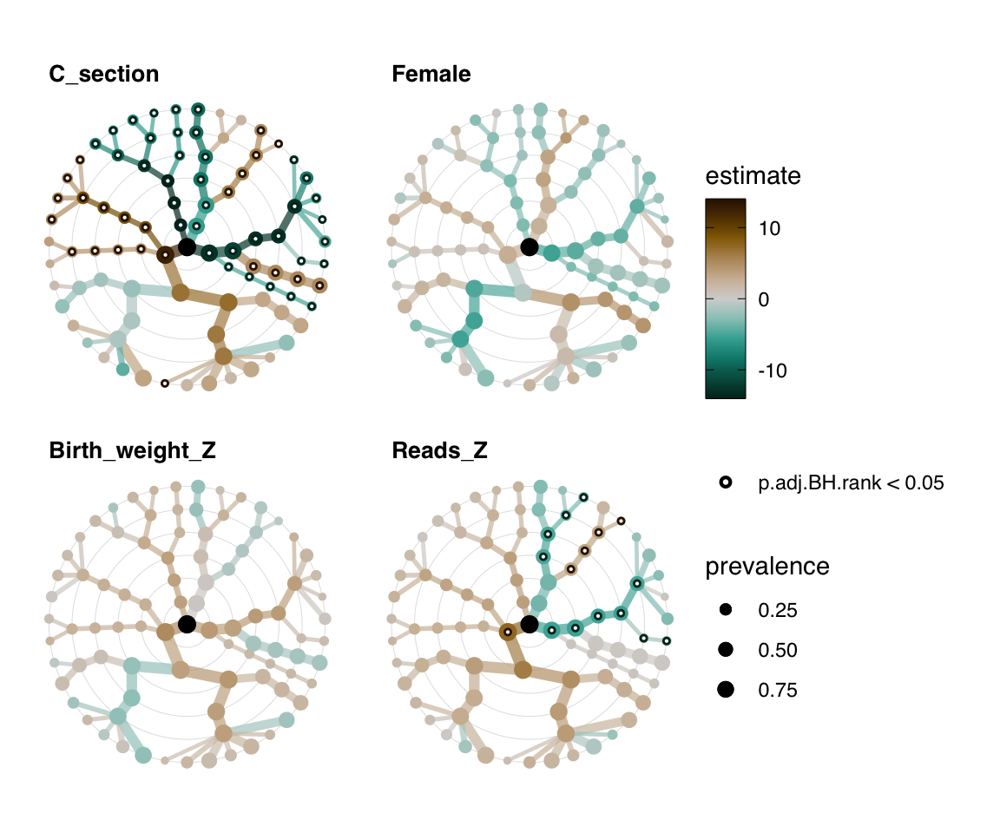
Taxatree Key
But how do we know which taxa are which nodes? We can create a labelled grey tree with taxatree_plotkey(). This labels only some of the taxa based on certain conditions that we specify.
set.seed(123) # label position
key <- shaoStats %>%
taxatree_plotkey(
taxon_renamer = function(x) stringr::str_remove(x, "[pfg]: "),
# conditions below, for filtering taxa to be labelled
rank == "phylum" | rank == "genus" & prevalence > 0.2
# all phyla are labelled, and all genera with a prevalence of over 0.2
)
key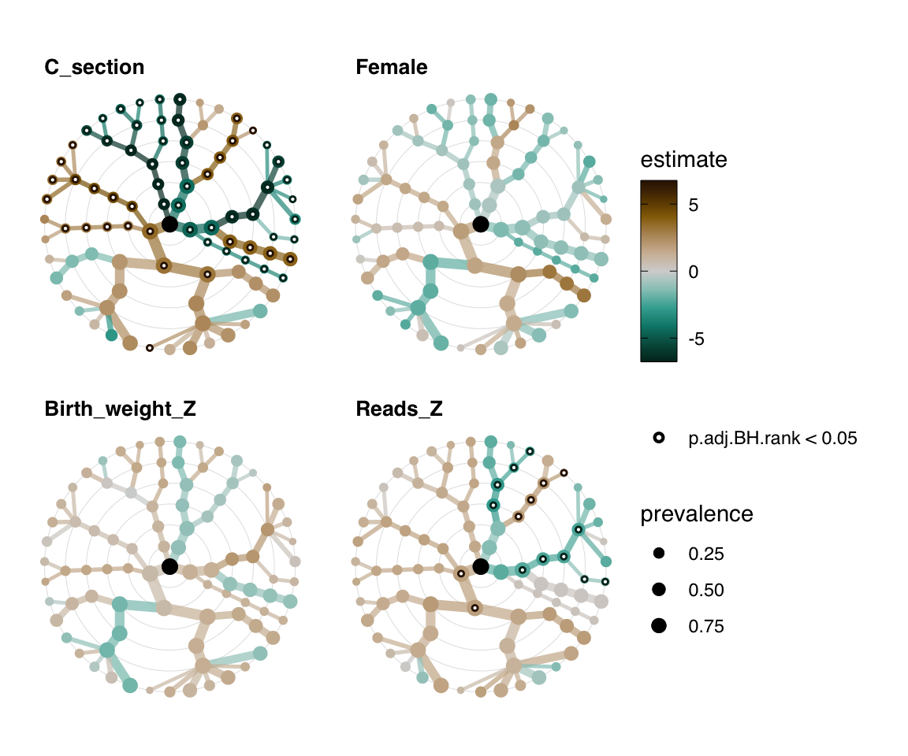
You can do more with these trees to customise them to your liking. See an extended tutorial here on the microViz website: including how to directly label taxa on the colored plots, change the layout and style of the trees, and even how to use a different regression modelling approach.
# try it out!Session info
session_info records your package versions etc. This is useful for debugging / reproducing analysis.
devtools::session_info()─ Session info ───────────────────────────────────────────────────────────────
setting value
version R version 4.3.0 (2023-04-21)
os macOS Ventura 13.3.1
system aarch64, darwin20
ui X11
language (EN)
collate en_US.UTF-8
ctype en_US.UTF-8
tz Europe/Prague
date 2023-05-23
pandoc 3.0.1 @ /opt/homebrew/bin/ (via rmarkdown)
─ Packages ───────────────────────────────────────────────────────────────────
package * version date (UTC) lib source
ade4 1.7-22 2023-02-06 [1] CRAN (R 4.3.0)
ape 5.7-1 2023-03-13 [1] CRAN (R 4.3.0)
backports 1.4.1 2021-12-13 [1] CRAN (R 4.3.0)
Biobase 2.60.0 2023-04-25 [1] RSPM (R 4.3.0)
BiocGenerics 0.46.0 2023-04-25 [1] RSPM (R 4.3.0)
biomformat 1.28.0 2023-04-25 [1] RSPM (R 4.3.0)
Biostrings 2.68.0 2023-04-25 [1] RSPM (R 4.3.0)
bitops 1.0-7 2021-04-24 [1] CRAN (R 4.3.0)
broom 1.0.4 2023-03-11 [1] CRAN (R 4.3.0)
ca 0.71.1 2020-01-24 [1] CRAN (R 4.3.0)
cachem 1.0.8 2023-05-01 [1] CRAN (R 4.3.0)
Cairo 1.6-0 2022-07-05 [1] CRAN (R 4.3.0)
callr 3.7.3 2022-11-02 [1] CRAN (R 4.3.0)
circlize 0.4.15 2022-05-10 [1] CRAN (R 4.3.0)
cli 3.6.1 2023-03-23 [1] CRAN (R 4.3.0)
clue 0.3-64 2023-01-31 [1] CRAN (R 4.3.0)
cluster 2.1.4 2022-08-22 [1] CRAN (R 4.3.0)
codetools 0.2-19 2023-02-01 [1] CRAN (R 4.3.0)
colorspace 2.1-0 2023-01-23 [1] CRAN (R 4.3.0)
ComplexHeatmap 2.16.0 2023-04-25 [1] RSPM (R 4.3.0)
corncob 0.3.1 2022-12-05 [1] CRAN (R 4.3.0)
crayon 1.5.2 2022-09-29 [1] CRAN (R 4.3.0)
data.table 1.14.8 2023-02-17 [1] CRAN (R 4.3.0)
devtools 2.4.5 2022-10-11 [1] CRAN (R 4.3.0)
digest 0.6.31 2022-12-11 [1] CRAN (R 4.3.0)
doParallel 1.0.17 2022-02-07 [1] CRAN (R 4.3.0)
dplyr * 1.1.2 2023-04-20 [1] CRAN (R 4.3.0)
ellipsis 0.3.2 2021-04-29 [1] CRAN (R 4.3.0)
evaluate 0.21 2023-05-05 [1] CRAN (R 4.3.0)
fansi 1.0.4 2023-01-22 [1] CRAN (R 4.3.0)
farver 2.1.1 2022-07-06 [1] CRAN (R 4.3.0)
fastmap 1.1.1 2023-02-24 [1] CRAN (R 4.3.0)
forcats * 1.0.0 2023-01-29 [1] CRAN (R 4.3.0)
foreach 1.5.2 2022-02-02 [1] CRAN (R 4.3.0)
fs 1.6.2 2023-04-25 [1] CRAN (R 4.3.0)
generics 0.1.3 2022-07-05 [1] CRAN (R 4.3.0)
GenomeInfoDb 1.36.0 2023-04-25 [1] RSPM (R 4.3.0)
GenomeInfoDbData 1.2.10 2023-05-12 [1] RSPM (R 4.3.0)
GetoptLong 1.0.5 2020-12-15 [1] CRAN (R 4.3.0)
ggforce 0.4.1 2022-10-04 [1] CRAN (R 4.3.0)
ggplot2 * 3.4.2 2023-04-03 [1] CRAN (R 4.3.0)
ggraph 2.1.0 2022-10-09 [1] CRAN (R 4.3.0)
ggrepel 0.9.3 2023-02-03 [1] CRAN (R 4.3.0)
GlobalOptions 0.1.2 2020-06-10 [1] CRAN (R 4.3.0)
glue 1.6.2 2022-02-24 [1] CRAN (R 4.3.0)
graphlayouts 1.0.0 2023-05-01 [1] CRAN (R 4.3.0)
gridExtra 2.3 2017-09-09 [1] CRAN (R 4.3.0)
gtable 0.3.3 2023-03-21 [1] CRAN (R 4.3.0)
hms 1.1.3 2023-03-21 [1] CRAN (R 4.3.0)
htmltools 0.5.5 2023-03-23 [1] CRAN (R 4.3.0)
htmlwidgets 1.6.2 2023-03-17 [1] CRAN (R 4.3.0)
httpuv 1.6.9 2023-02-14 [1] CRAN (R 4.3.0)
igraph 1.4.2 2023-04-07 [1] CRAN (R 4.3.0)
IRanges 2.34.0 2023-04-25 [1] RSPM (R 4.3.0)
iterators 1.0.14 2022-02-05 [1] CRAN (R 4.3.0)
jsonlite 1.8.4 2022-12-06 [1] CRAN (R 4.3.0)
knitr 1.42 2023-01-25 [1] CRAN (R 4.3.0)
labeling 0.4.2 2020-10-20 [1] CRAN (R 4.3.0)
later 1.3.1 2023-05-02 [1] CRAN (R 4.3.0)
lattice 0.21-8 2023-04-05 [1] CRAN (R 4.3.0)
lifecycle 1.0.3 2022-10-07 [1] CRAN (R 4.3.0)
lubridate * 1.9.2 2023-02-10 [1] CRAN (R 4.3.0)
magrittr 2.0.3 2022-03-30 [1] CRAN (R 4.3.0)
MASS 7.3-60 2023-05-04 [1] CRAN (R 4.3.0)
Matrix 1.5-4 2023-04-04 [1] CRAN (R 4.3.0)
matrixStats 0.63.0 2022-11-18 [1] CRAN (R 4.3.0)
memoise 2.0.1 2021-11-26 [1] CRAN (R 4.3.0)
mgcv 1.8-42 2023-03-02 [1] CRAN (R 4.3.0)
microbiome 1.22.0 2023-04-25 [1] RSPM (R 4.3.0)
microViz * 0.10.10 2023-05-19 [1] Github (david-barnett/microViz@2a021f2)
mime 0.12 2021-09-28 [1] CRAN (R 4.3.0)
miniUI 0.1.1.1 2018-05-18 [1] CRAN (R 4.3.0)
multtest 2.56.0 2023-04-25 [1] RSPM (R 4.3.0)
munsell 0.5.0 2018-06-12 [1] CRAN (R 4.3.0)
nlme 3.1-162 2023-01-31 [1] CRAN (R 4.3.0)
patchwork 1.1.2 2022-08-19 [1] CRAN (R 4.3.0)
permute 0.9-7 2022-01-27 [1] CRAN (R 4.3.0)
phyloseq * 1.44.0 2023-04-25 [1] RSPM (R 4.3.0)
pillar 1.9.0 2023-03-22 [1] CRAN (R 4.3.0)
pkgbuild 1.4.0 2022-11-27 [1] CRAN (R 4.3.0)
pkgconfig 2.0.3 2019-09-22 [1] CRAN (R 4.3.0)
pkgload 1.3.2 2022-11-16 [1] CRAN (R 4.3.0)
plyr 1.8.8 2022-11-11 [1] CRAN (R 4.3.0)
png 0.1-8 2022-11-29 [1] CRAN (R 4.3.0)
polyclip 1.10-4 2022-10-20 [1] CRAN (R 4.3.0)
prettyunits 1.1.1 2020-01-24 [1] CRAN (R 4.3.0)
processx 3.8.1 2023-04-18 [1] CRAN (R 4.3.0)
profvis 0.3.8 2023-05-02 [1] CRAN (R 4.3.0)
promises 1.2.0.1 2021-02-11 [1] CRAN (R 4.3.0)
ps 1.7.5 2023-04-18 [1] CRAN (R 4.3.0)
purrr * 1.0.1 2023-01-10 [1] CRAN (R 4.3.0)
R6 2.5.1 2021-08-19 [1] CRAN (R 4.3.0)
RColorBrewer 1.1-3 2022-04-03 [1] CRAN (R 4.3.0)
Rcpp 1.0.10 2023-01-22 [1] CRAN (R 4.3.0)
RCurl 1.98-1.12 2023-03-27 [1] CRAN (R 4.3.0)
readr * 2.1.4 2023-02-10 [1] CRAN (R 4.3.0)
registry 0.5-1 2019-03-05 [1] CRAN (R 4.3.0)
remotes 2.4.2 2021-11-30 [1] CRAN (R 4.3.0)
reshape2 1.4.4 2020-04-09 [1] CRAN (R 4.3.0)
rhdf5 2.44.0 2023-04-25 [1] RSPM (R 4.3.0)
rhdf5filters 1.12.1 2023-04-30 [1] RSPM (R 4.3.0)
Rhdf5lib 1.22.0 2023-04-25 [1] RSPM (R 4.3.0)
rjson 0.2.21 2022-01-09 [1] CRAN (R 4.3.0)
rlang 1.1.1 2023-04-28 [1] CRAN (R 4.3.0)
rmarkdown 2.21 2023-03-26 [1] CRAN (R 4.3.0)
rstudioapi 0.14 2022-08-22 [1] CRAN (R 4.3.0)
Rtsne 0.16 2022-04-17 [1] CRAN (R 4.3.0)
S4Vectors 0.38.1 2023-05-02 [1] RSPM (R 4.3.0)
scales 1.2.1 2022-08-20 [1] CRAN (R 4.3.0)
seriation * 1.4.2 2023-03-08 [1] CRAN (R 4.3.0)
sessioninfo 1.2.2 2021-12-06 [1] CRAN (R 4.3.0)
shape 1.4.6 2021-05-19 [1] CRAN (R 4.3.0)
shiny * 1.7.4 2022-12-15 [1] CRAN (R 4.3.0)
stringi 1.7.12 2023-01-11 [1] CRAN (R 4.3.0)
stringr * 1.5.0 2022-12-02 [1] CRAN (R 4.3.0)
survival 3.5-5 2023-03-12 [1] CRAN (R 4.3.0)
tibble * 3.2.1 2023-03-20 [1] CRAN (R 4.3.0)
tidygraph 1.2.3 2023-02-01 [1] CRAN (R 4.3.0)
tidyr * 1.3.0 2023-01-24 [1] CRAN (R 4.3.0)
tidyselect 1.2.0 2022-10-10 [1] CRAN (R 4.3.0)
tidyverse * 2.0.0 2023-02-22 [1] CRAN (R 4.3.0)
timechange 0.2.0 2023-01-11 [1] CRAN (R 4.3.0)
TSP 1.2-4 2023-04-04 [1] CRAN (R 4.3.0)
tweenr 2.0.2 2022-09-06 [1] CRAN (R 4.3.0)
tzdb 0.3.0 2022-03-28 [1] CRAN (R 4.3.0)
urlchecker 1.0.1 2021-11-30 [1] CRAN (R 4.3.0)
usethis 2.1.6 2022-05-25 [1] CRAN (R 4.3.0)
utf8 1.2.3 2023-01-31 [1] CRAN (R 4.3.0)
vctrs 0.6.2 2023-04-19 [1] CRAN (R 4.3.0)
vegan 2.6-4 2022-10-11 [1] CRAN (R 4.3.0)
viridis 0.6.3 2023-05-03 [1] CRAN (R 4.3.0)
viridisLite 0.4.2 2023-05-02 [1] CRAN (R 4.3.0)
withr 2.5.0 2022-03-03 [1] CRAN (R 4.3.0)
xfun 0.39 2023-04-20 [1] CRAN (R 4.3.0)
xtable 1.8-4 2019-04-21 [1] CRAN (R 4.3.0)
XVector 0.40.0 2023-04-25 [1] RSPM (R 4.3.0)
yaml 2.3.7 2023-01-23 [1] CRAN (R 4.3.0)
zlibbioc 1.46.0 2023-04-25 [1] RSPM (R 4.3.0)
[1] /Library/Frameworks/R.framework/Versions/4.3-arm64/Resources/library
──────────────────────────────────────────────────────────────────────────────